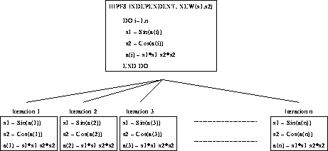

The NEW clause tells the compiler that in order to parallelise the following loop, each iteration (in practise, each processor,) should make its own (local) version of the listed scalar variables. In the cited example, the iterations may be performed in parallel if and only if each iteration uses it own version of s1 and s2.
Figure 38 illustrates that the iterations can be performed in parallel -- each individual iteration includes references to its own s1 and s2.

Figure 38: Visualisation of an INDEPENDENT NEW Loop
Iteration 1 has its own versions of s1 and s2, as does iteration 2 and so on up to iteration n.
There are rules associated with NEW variables. They cannot:
Referring back to the previous example, at the end of the INDEPENDENT loop s1 and s2 do not have well defined values. (There have been n copies of these variables -- which copies hold their true value?) It is therefore forbidden to attempt to use a NEW variable after its appearance in a NEW clause without first assigning a fresh value to it. This means:
!HPF$ INDEPENDENT, NEW(s1,s2) DO i = 1,n s1 = SIN(a(i)) s2 = COS(a(i)) a(i) = s1*s1-s2*s2 END DO k = s1+s2
is forbidden due to the last-line referencing of s1 and s2.
NEW is not valid with FORALL s because it is not needed. The only entities that NEW would make any sense being applied to are index variables of nested FORALL s, however, due to the fact that it is not valid to refer to these index variables outside of the FORALL, the compiler is able to create and destroy temporary versions of these indices at will with no modification of the semantics of the program.
It has been pointed out that using a storage associated (EQUIVALENCE d) variable in a NEW clause can lead to problems:
INTEGER eq1, eq2(2), a(10)
EQUIVALENCE (eq1, eq2)
eq2(2) = 99
!hpf$ INDEPENDENT, NEW(eq1)
DO idx = 1, 2
eq1 = idx
a(idx) = eq2(1) + eq2(2)
END DO
END
What do we do with eq2 -- part of it eq2(1) (which is storage associated with eq1) could be considered to be NEW and the other part, eq2(2), is not. In order to avoid this taxing problem, a variable which appears in NEW should not be specified in an EQUIVALENCE statement.
New variables cannot be SAVE d or be dummy arguments or pointers because this would compromise the compilers ability to create instances of the NEW variables on each processor in the grid.